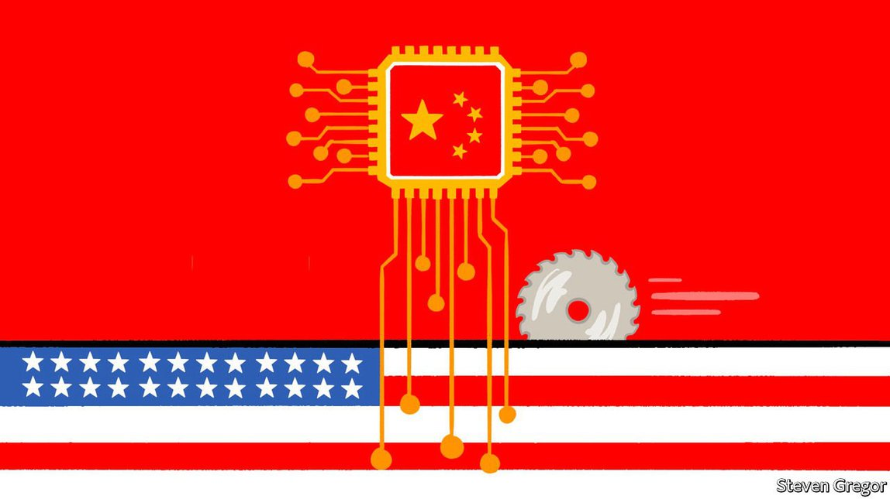

Text
2021-05-17T15:54:34+00:00
Assuming the position
重要任命
重要任命
Joe Biden’s government has not yet committed to a path on trade in technology with China
拜登政府尚未确定与中国的技术贸易路线
拜登政府尚未確定與中國的技術貿易路線
To understand which way it will jump, watch the hitherto obscure Bureau of Industry and Security
要了解它会选择哪条路，可以关注一直以来人们所知不多的工业与安全局
要了解它會選擇哪條路，可以關注一直以來人們所知不多的工業與安全局
THE PROCESS of filling vacancies at the Bureau of Industry and Security (BIS) does not normally make the news. An agency of the Department of Commerce, BIS is tasked with running America’s export-control regulations. These rules were originally designed to prevent the components of weapons of mass destruction from being shipped off to terrorists. The work of overseeing them was important public service, but carried out in the background, away from the public eye.
工业与安全局（Bureau of Industry and Security，以下简称BIS）填补职位空缺的过程通常不会登上新闻版面。BIS是美国商务部的下属机构，其任务是执行美国的出口管制法规。这些法规最初是为了确保大规模杀伤性武器的零部件不会落到恐怖分子手中。监督这些法规的执行是重要的公共服务，但这项工作在幕后进行，远离公众视线。
工業與安全局（Bureau of Industry and Security，以下簡稱BIS）填補職位空缺的過程通常不會登上新聞版面。BIS是美國商務部的下屬機構，其任務是執行美國的出口管制法規。這些法規最初是為了確保大規模殺傷性武器的零部件不會落到恐怖分子手中。監督這些法規的執行是重要的公共服務，但這項工作在幕後進行，遠離公眾視線。
Donald Trump’s presidency changed that. He and the China hawks in his administration repurposed BIS and its regulations as a weapon against China’s technological ascendancy. They rewrote the rules several times between 2018 and 2020 in an escalating series of attempts to cut off Huawei, a Chinese technology giant, from global semiconductor supply chains. Huawei has reported declining revenue in its two most recent financial quarters as a result, proving that America can use export controls to disrupt Chinese technological development, at least in the short term.
特朗普的任期改变了这一点。他以及他政府中的对华鹰派把BIS及其监管改造成了对抗中国技术优势的武器。2018年至2020年间，他们多次修改这些法规，以不断升级的行动试图将中国科技巨头华为从全球半导体供应链中切除出去。华为最近连续两个财季报告营收随之下滑，证明至少在短期内，美国可以利用出口管制来扰乱中国的技术发展。
特朗普的任期改變了這一點。他以及他政府中的對華鷹派把BIS及其監管改造成了對抗中國技術優勢的武器。2018年至2020年間，他們多次修改這些法規，以不斷升級的行動試圖將中國科技巨頭華為從全球半導體供應鏈中切除出去。華為最近連續兩個財季報告營收隨之下滑，證明至少在短期內，美國可以利用出口管制來擾亂中國的技術發展。
This put BIS right in the middle of America’s biggest foreign-policy challenge, containing China’s rise. Speculation about its leadership began soon after Mr Biden took office. But the chaotic methods of Mr Trump’s administration created a new political dynamic around the agency. The repurposing of regulations often left gaps between what the new rules actually said and what the Trump administration claimed they meant for China in speeches and press releases. Lawyers advised their clients to follow the rules to the letter, thereby allowing them to carry on doing business with Chinese entities where it was still legal to do so.
这就把BIS放在了遏制中国崛起这一美国最大外交政策挑战的中心。拜登上台后不久，人们就开始猜测谁将出任BIS局长。但特朗普政府的混乱做法带来了围绕该局的一种新的政治动态。改变法规的用途后，在新法规的实际内容和特朗普政府在演讲和新闻稿中宣称它们对中国的影响之间往往存有差距。律师们建议其客户严格遵循实际规定，这样就能在仍然合法的领域里继续与中方实体开展业务。
這就把BIS放在了遏制中國崛起這一美國最大外交政策挑戰的中心。拜登上台後不久，人們就開始猜測誰將出任BIS局長。但特朗普政府的混亂做法帶來了圍繞該局的一種新的政治動態。改變法規的用途後，在新法規的實際內容和特朗普政府在演講和新聞稿中宣稱它們對中國的影響之間往往存有差距。律師們建議其客戶嚴格遵循實際規定，這樣就能在仍然合法的領域裡繼續與中方實體開展業務。
The result is that many export-control experts were seen as “soft on China”. On May 4th a Republican congressman from Texas, Michael McCaul, called on the president to nominate a candidate that has “real national-security experience, deep knowledge of the CCP, and will not be conflicted by deep ties to industry”.
结果是许多出口管制专家被视为“对中国手软”。5月4日，来自得克萨斯州的共和党众议员迈克尔·麦考尔（Michael McCaul）呼吁总统提名的候选人应具有“真正的国家安全经验，对中共有深刻了解，并且不会因为与产业界有密切联系而有利益冲突”。
結果是許多出口管制專家被視為“對中國手軟”。5月4日，來自得克薩斯州的共和黨眾議員邁克爾·麥考爾（Michael McCaul）呼籲總統提名的候選人應具有“真正的國家安全經驗，對中共有深刻了解，並且不會因為與產業界有密切聯繫而有利益衝突”。
It is this sort of rhetoric that has driven the administration’s consideration of “outsider” candidates who do not carry the damaging expert label. The archetype is James Mulvenon, a defence analyst who became known in Washington last year for authorship of a report linking SMIC, China’s leading chipmaker, with the People’s Liberation Army. That Mr Mulvenon has even been under consideration demonstrates how far the role of BIS and the politics around it have shifted, as he is not a lawyer and has no experience administering or complying with export-control regulations. Barack Obama appointed a lawyer, George W. Bush a tech-company boss. The post was vacant for most of Mr Trump’s term; hence, in part, the chaos.
正是这种论调促使拜登政府考虑任命“局外人”，他们不带有不利的专家标签。一个典型是国防分析师毛文杰（James Mulvenon），他去年撰写了一份报告，把中芯国际这家中国领先的芯片制造商与中国军方联系起来，这让他开始在华盛顿出名。毛文杰既不是律师，也没有管理或遵守出口管制法规的经验，却在被考虑之列，这表明BIS的角色及其所处的政治环境已经转变。奥巴马当年任命的BIS局长是一名律师，小布什选择了一家科技公司的老板。在特朗普任内，这个职位在大部分时间里空缺，在一定程度上造成了混乱。
正是這種論調促使拜登政府考慮任命“局外人”，他們不帶有不利的專家標籤。一個典型是國防分析師毛文傑（James Mulvenon），他去年撰寫了一份報告，把中芯國際這家中國領先的芯片製造商與中國軍方聯繫起來，這讓他開始在華盛頓出名。毛文傑既不是律師，也沒有管理或遵守出口管制法規的經驗，卻在被考慮之列，這表明BIS的角色及其所處的政治環境已經轉變。奧巴馬當年任命的BIS局長是一名律師，小布什選擇了一家科技公司的老闆。在特朗普任內，這個職位在大部分時間裡空缺，在一定程度上造成了混亂。
Political appointees do not determine policy, but rather implement what flows from the government, and from the National Security Council (NSC) in particular. Mr Biden’s NSC contains plenty of expertise on China and technology. Saif Khan, the council’s Director for Technology and National Security, published a paper in January which laid out a plan for curtailing Chinese semiconductor development. Its other members want to develop a tough new line, less for the industrial-competition reasons that motivated Mr Trump and his administration than because of the technology-enabled human-rights abuses that the Chinese government is perpetrating in Xinjiang and beyond. Yet the plan, at present, appears to be unfinished. People close to Mr Biden’s staff say that policy on China and technology remains undecided.
获政治任命的官员并不制定政策，而是执行美国政府、特别是国家安全委员会（National Security Council，下称国安会）的政策。拜登的国安会在中国和技术问题方面具有丰富的专业知识。国安会技术与国家安全主任赛义夫·汗（Saif Khan）在1月发表的文章中提出了限制中国半导体发展的计划。国安会的其他成员希望制定一条强硬的新路线，更多是因为他们认为中国政府正借助技术在新疆及其他地区侵犯人权，而不是像特朗普及其政府那样主要出于产业竞争方面的原因。不过这一计划目前似乎尚未制定完毕。与拜登下属关系密切的人士说，对华政策和技术政策仍然悬而未决。
獲政治任命的官員並不制定政策，而是執行美國政府、特別是國家安全委員會（National Security Council，下稱國安會）的政策。拜登的國安會在中國和技術問題方面具有豐富的專業知識。國安會技術與國家安全主任賽義夫·汗（Saif Khan）在1月發表的文章中提出了限制中國半導體發展的計劃。國安會的其他成員希望制定一條強硬的新路線，更多是因為他們認為中國政府正藉助技術在新疆及其他地區侵犯人權，而不是像特朗普及其政府那樣主要出於產業競爭方面的原因。不過這一計劃目前似乎尚未制定完畢。與拜登下屬關係密切的人士說，對華政策和技術政策仍然懸而未決。
The choice of an under-secretary to run BIS, when it is made, will be a sign of whether the Biden administration has a real plan. If the president chooses someone with little to no experience with export-control law, but who has a hard line on China, that will indicate that domestic politics are dominating the administration’s thinking and that it lacks the confidence to fend off critics like Mr McCaul. The appointment of someone who knows the law and can carry out the government’s bidding quickly would suggest that Mr Biden does, indeed, have a plan for redrawing the lines of technological trade with China, and that he intends to use the most experienced people possible to do so. ■
最终选择谁来出任管理BIS的副部长，将是拜登政府是否真有切实计划的标志。如果拜登选择了某个缺少或者完全没有出口管制法律经验、但对中国态度强硬的人，那将表明国内政治在主导这届政府的思路，而且政府没有信心去抵挡麦考尔等人的批评。如果任命一个懂法律并可以迅速执行政府意图的人，就显示拜登确实有一项重新设计对华技术贸易路线的计划，并打算让最有经验的人担此重任。
最終選擇誰來出任管理BIS的副部長，將是拜登政府是否真有切實計劃的標誌。如果拜登選擇了某個缺少或者完全沒有出口管制法律經驗、但對中國態度強硬的人，那將表明國內政治在主導這屆政府的思路，而且政府沒有信心去抵擋麥考爾等人的批評。如果任命一個懂法律並可以迅速執行政府意圖的人，就顯示拜登確實有一項重新設計對華技術貿易路線的計劃，並打算讓最有經驗的人擔此重任。
For more coverage of Joe Biden’s presidency, visit our dedicated hub